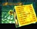
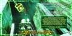

Sirius — miniatures
Anciennes miniatures de navigation. La galerie historique conserve les trois vues complètes de cette pochette.
Ouvrir l’imageFichiers conservés
Sirius — miniatures


Informations du fichier
- Nom conservé
- back1.jpg
- Taille
- 2,136 octets
- SHA-256
- 37f07b5f7ae443f4f72c3de41e60d2d17d901f12db5342e55f7c3e89e37bd644
Sirius — miniatures


Informations du fichier
- Nom conservé
- interior1.jpg
- Taille
- 2,727 octets
- SHA-256
- ded570f20d4a79a986dddf296a3ea9f747d94a264c751c3b552a04e04976186b